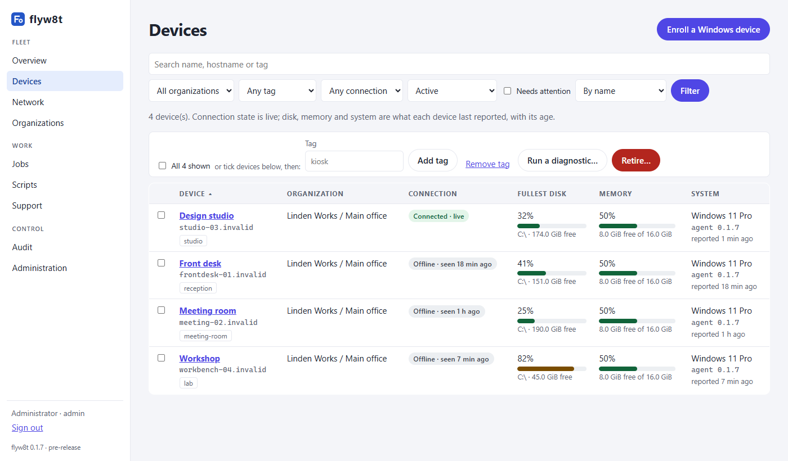
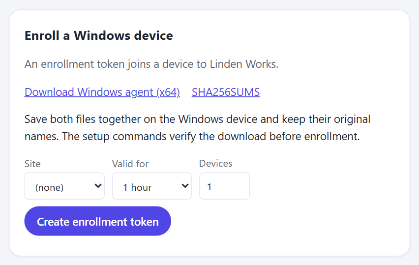
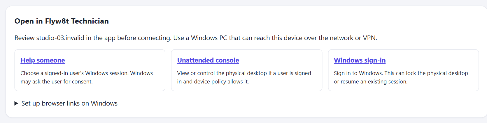

Your Windows
support console.
flyw8t is a self-hosted remote monitoring and management tool for MSP technicians. Check which PCs are online, run diagnostics and open a Windows session from the device page.


Try it on one Windows PC
To try the beta on one Windows x64 lab PC, sign in to your flyw8t 0.1.8 console as an administrator or assigned technician. The installation guide also covers starting your own console.
Download the signed Windows apps
- Download the Windows agent (.exe)
Runs on the PC you manage. It sends inventory and diagnostic results to your console over an outbound connection.
- Download Flyw8t Technician (.exe)
Runs on the PC you work from. It opens a Windows session when you choose one in the console.


Verify your first device
- Open the site installer on the target PC and approve the Windows setup prompt. The beta installation guide covers both installer and manual setup. In Devices, look for Connected · live beside your PC.
- On the device page, run System information under Run a diagnostic. Open the job to see the result and the evidence the agent returned.
- Keep Flyw8t Technician in a permanent folder. Open it and choose Browser links → Enable for this Windows user. Back on your device page, choose Open in Flyw8t Technician → Help someone. Accept the browser prompt if shown and review the suggested computer in the app. You can stop here on one PC.
Choose the desktop you need
The agent can report through NAT using its outbound connection. For a native Windows session, the technician PC needs its own route to the target over the LAN or VPN, plus Windows access to that host.


Help someone
Pick a signed-in user’s Windows session, then view it or request control. Windows checks your permissions and asks the user for consent when the host policy requires it.
Unattended console
Reach the physical desktop when someone is signed in and the owner’s existing Windows policy permits unattended access. The app checks which view or control action that policy allows.
Windows sign-in
Open an RDP session in the desktop app with optional clipboard sharing. Signing in can lock the physical desktop or resume an existing session. Try this with a second reachable Windows host.
Share a screen in the browser
From Support, invite someone to share a tab or screen they choose. The session is view-only. An MCP screenshot requires their separate permission. For connections across NAT, the operator can configure STUN and a TURN relay.
What a job result means
Open a job to see what the agent ran, what it reported and whether the result met that diagnostic’s criteria.
The evidence checks out
The device ran the diagnostic and returned the evidence it promised, such as an operating system build and uptime.
There’s a reason
The job records what went wrong. Read the reported error before deciding whether to try again.
The result is missing
If a device disconnects after delivery, its result can still arrive later. The job history shows the last confirmed step.
Running a beta trial
Use a lab device you administer. WAN interruption recovery and unattended physical-console access still need field verification. Windows edition, host policy and licensing determine which sessions the host can provide.